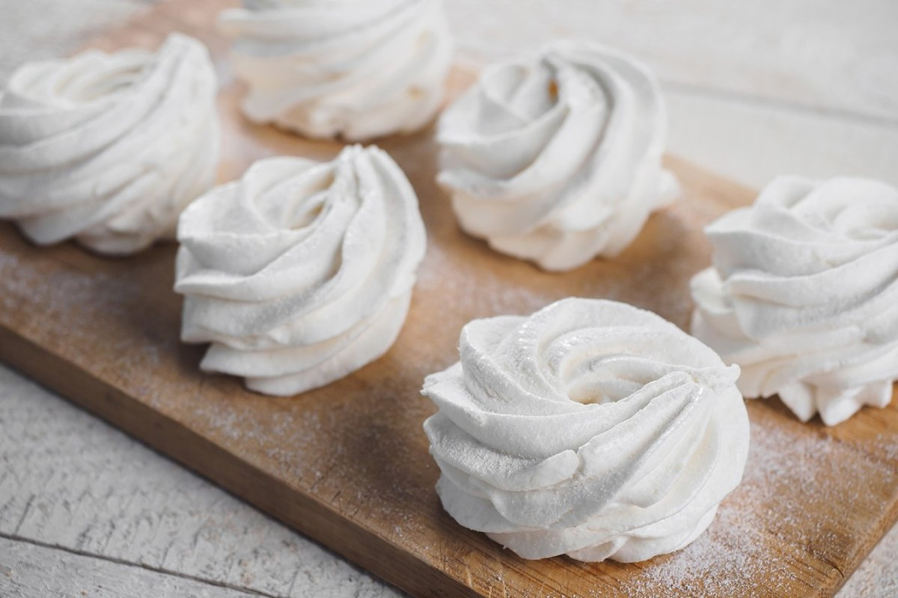

Кулинарный цех "Пирожок" 
Блюда по домашним рецептам - вам понравится!
Зефир

Домашний зефир - это нежное и воздушное лакомство из фруктового пюре, сахара, желатина и взбитых белков.
Это сладкое угощение, которое радует как взрослых, так и детей своим нежным вкусом и приятной текстурой.
Ингредиенты:
- Фруктовое пюре
- Сахар
- Желатин
- Белки яиц
- Ванильный экстракт (по желанию)
- Пудра сахарная (для посыпки)
Рецепт приготовления:
- В миске смешайте фруктовое пюре с сахаром и ванильным экстрактом.
- Добавьте размягченный желатин в пюре и тщательно размешайте.
- Взбейте белки до образования пиков.
- Постепенно добавьте взбитые белки в пюре, аккуратно перемешивая до получения однородной массы.
- Выложите смесь в форму, предварительно выстланную пергаментной бумагой, и разровняйте поверхность.
- Оставьте зефир на несколько часов или на ночь для застывания.
- После застывания нарежьте зефир на квадраты и посыпьте пудрой сахарной.
- Готовый домашний зефир готов к подаче и наслаждению! Приятного аппетита!